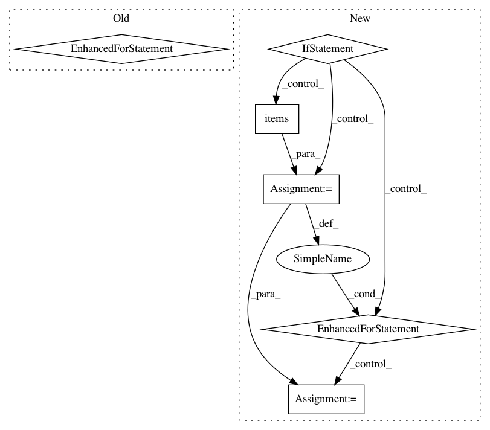

b0c4db281dfb798f8bfd8ea1320e78125f2a7709,keras/layers/preprocessing/index_lookup.py,_IndexLookupCombiner,merge,#_IndexLookupCombiner#Any#,477
Before Change
base_accumulator = accumulators[0]
for accumulator in accumulators[1:]:
for token, value in accumulator.count_dict.items():
base_accumulator.count_dict[token] += value
return base_accumulator
def extract(self, accumulator):
Convert an accumulator into a dict of output values.
After Change
if self._compute_idf:
base_accumulator.data["next_doc_id"] += accumulator.data["next_doc_id"]
if self._compute_idf:
for token, value in accumulator.per_doc_count_dict.items():
// Any newly created token counts in "base_accumulator""s
// per_doc_count_dict will have a last_doc_id of -1. This is always
// less than the next doc id (which are strictly positive), so any
// future occurrences are guaranteed to be counted.
base_accumulator.per_doc_count_dict[token]["count"] += value[
"count"]
return base_accumulator
def extract(self, accumulator):
Convert an accumulator into a dict of output values.
In pattern: SUPERPATTERN
Frequency: 3
Non-data size: 6
Instances
Project Name: keras-team/keras
Commit Name: b0c4db281dfb798f8bfd8ea1320e78125f2a7709
Time: 2021-02-05
Author: scottzhu@google.com
File Name: keras/layers/preprocessing/index_lookup.py
Class Name: _IndexLookupCombiner
Method Name: merge
Project Name: ClimbsRocks/auto_ml
Commit Name: 6fb774b2bb899aa5da29ed11f998a88b93500bad
Time: 2016-08-12
Author: ClimbsBytes@gmail.com
File Name: auto_ml/utils.py
Class Name: BasicDataCleaning
Method Name: turn_strings_to_floats
Project Name: NTMC-Community/MatchZoo
Commit Name: 4965b77c43be657cb00905122046bb1da3ce664a
Time: 2019-01-04
Author: 948280670@qq.com
File Name: matchzoo/processor_units/processor_units.py
Class Name: WordHashingUnit
Method Name: transform